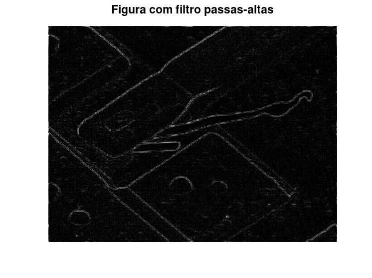

Estudante: André Alfonso Peixoto
GONZALEZ, R; WOODS, R; EDDINS, S. Digital Image Processing Using MATLAB 2. 2. ed. Gatesmark Publishing, 2009. Mathworks Stack Exchange Wikipedia
%{
* Definir algum filtro passa-baixas, passa-altas, rejeita faixa, passa faixa. Escolha alguns deles.
- Aplicar em 3 imagens imagens que tem a necessidade de filtrar na frequência para alguma aplicação. Teste e comente.
* Definir filtro notch,
- Aplicar na imagem ao lado, para remover o efeito Moiré
%}
pkg load signal; pkg load symbolic; pkg load image;
img = imread("Fig0429(a)(blown_ic).bmp"); %img = rgb2gray(img); % Conversão para preto e branco figure; imshow(img,[]); title("Imagem original"); imgF = fft2(img); % Transformada de Fourier imgF_n = fftshift(imgF); % Normalização da transformada de Fourier imgF_n2 = 1 * log(1 + abs(imgF_n)); % Preparação para Transformada de Fourier figure imshow(imgF_n2,[]); title("Transformada de Fourier no espectro de amplitude 1");
[M,N] = size(imgF); x = linspace(-5,5,N); y = linspace(-5,5,M); [X,Y] = meshgrid(x,y);
z = (2.9/sqrt(2*pi).*exp(-(X.^2/2) - (Y.^2/2))); z2 = 1.1569-z; figure; surf(X,Y,z2); shading interp axis tight H = fftshift(z2); G = imgF.*H; % Aplicação do filtro passas-altas g = ifft2(G); figure imshow(abs(g),[]); title("Figura com filtro passas-altas"); G_norm = fftshift(G); J = 1 * log(1 + abs(G_norm)); figure; imshow(abs(J),[]);
im2=imread("lena.bmp"); %im2=double(rgb2gray(im2)); sigma=9; sizei=101; [x,y] = meshgrid(-sizei/2:sizei/2,-sizei/2:sizei/2); constant = 1/(2*pi*sigma*sigma); kernel = constant*exp( -(y.^2 + x.^2 )/(2 * sigma * sigma)); kernel=kernel/sum(kernel(:)); im2_low = conv2(im2,kernel,'same'); F = fft2(im2_low); IM2 = fft2(im2); IM2_high = IM2 - F; im2_high = ifft2(IM2_high); figure; imshow(im2_high,[]); title("Filtro passas-alta");
warning: imshow: only showing real part of complex image
warning: called from
imshow at line 184 column 5
publish>eval_code_helper at line 1066 column 8
publish>eval_code at line 983 column 30
publish at line 401 column 9
img = imread("Fig0421(car_newsprint_sampled_at_75DPI).bmp"); %img = rgb2gray(img); [M,N] = size(img); figure; imshow(img,[]); title("Imagem original"); imgF = fft2(img); % Transformada de Fourier imgF_n = fftshift(imgF); % Normalização da transformada de Fourier imgF_n2 = 1 * log(1 + abs(imgF_n)); % Preparação para Transformada de Fourier figure; imshow(abs(imgF_n2),[]) title("Filtro notch"); %H = ones(M,N); %centros = [56 86 10; 112 82 10; 112 41 10; 55 45 10; 58 166 10; % 114 162 10; 115 203 10; 58 207 10]